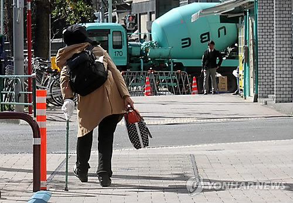

[초고령사회 부산](상) 이제 시작일뿐…인구는 매달 2천명씩↓, 노인은 2천명씩↑
 노인 인구 급증으로 부산시 노인 복지 예산 비중은 크게 늘었다. 2011년 전체 예산의 6.1%(4천231억원)이던 노인 복지 예산은 2020년 전체 예산의 13.6%(1조7천103억원)로 2배 이상 증가했다.만 65세 이상 노인 인구가 27.1%에 달하는 부산 중구는 노인 부문 예산이 구 전체 예산 1천872억여원의 20.4%인 382억여원에 달한다.
노인 대책 중 큰 부분을 차지하는 것이 기초연금이다.
2015년 36만명에게 월 최대 10만∼20만원씩 총 7천773억원을 차등 지급하던 부산시 기초연금 예산 규모는 불과 6년 만에 수급 대상과 지급액이 늘면서 1조5천168억원으로 2배 이상 증가했다.
현재 상당수 노인이 기초연금 외에 별다른 수익이 없다 보니 우리나라의 노인빈곤율은 2018년 기준 42%로 OECD 국가(평균 13.5%) 중 가장 높다.
실제 65세 이상 노인의 41.7%가 기초연금 외 별다른 수입이 없고 국민연금 수급률도 지난해 기준 44.3%에 불과하다.
특히 정년과 연금 수급 연령 간 괴리로 소득 공백기가 있어 노인 노후 대책은 더욱 절실하다.
이 때문에 일본이나 서구 국가보다 연금제도가 뒤늦게 시작된 우리나라의 노인 돌봄과 일자리 정책은 노인 대책의 핵심이다.
오늘의 명화

연합뉴스 주요뉴스
연합뉴스 랭킹 뉴스
분야별 주요뉴스
- 정치
- [1보] 문대통령 "새 방역체계로 점진적 전환 모색"
- 경제
- "여성 경력단절 예방법, 여성 선배·전문가 조언 들어보세요"
- 사회
- [게시판] 한독, 굿네이버스와 결식아동 식사 지원 사업 진행
언론사별 가장 많이 본 뉴스
"카뱅, 민낯 이제부터 나온다"…증권가 술렁이는 이유 |
월세방 사는데 재난지원금 못 받는다니…" 직장인들 아우성 |
"제대로 배우길"…BJ, 수백만원 별풍선 쏜 중학생에 '경고' |
코스피 8% '찔끔' 오를 때 20% 뛰었다…요즘 뜨는 투자처 |